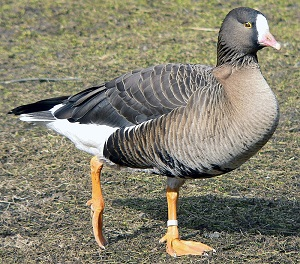
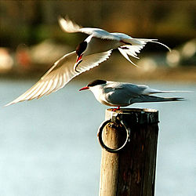

Latvijas aizsargājamas dzīvnieku sugas Latvijas Sarkanajā grāmatā
Šajā lapā ir noradītas divas putnu sugas, kas ir iekļautas Latvijas sarkanajā grāmatā.
Sarkanās grāmatas 1. Kategorijas putns
Mazā zoss

Sarkanās grāmatas 2. Kategorijas putns + iekļauts MK lēmumā par īpaši aizsargājamajām dzīvnieku sugām
Jūras ziriņš
